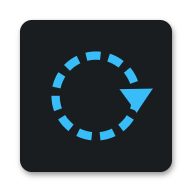

Your data stays
on your phone.
abo is offline-first. Subscription names, prices, dates — all stored locally in SQLite. No accounts, no tracking, no third-party SDKs.
One network call
The app fetches a service catalog from shivarchit.com/abo/catalog.json at most once per day. Anonymous HTTPS GET, no body, no identifiers. That's it.
Permissions
Notifications for renewal reminders. Alarms & reminders so those fire on time. Internet for the catalog above. SMS — optional, off by default, explained below.
SMS scanning — optional, on-device
If you enable Scan SMS for payments, abo reads bank transaction SMS on your device to detect subscription debits (e.g. Rs 649 debited … NETFLIX) and recurring charges. Parsing happens entirely on your phone — message content is never transmitted, uploaded, or shared with anyone; abo has no server. Only payment-shaped bank alerts are considered: personal messages, OTPs and promotions are ignored and never stored. Nothing is recorded automatically — detections wait in a daily review screen until you confirm them. The feature is opt-in during setup, and you can turn it off anytime in Settings or by revoking the SMS permission in Android settings.
Your data, your control
Export from Settings. Delete subscriptions in-app. Uninstall to wipe everything — there's nothing on our side.